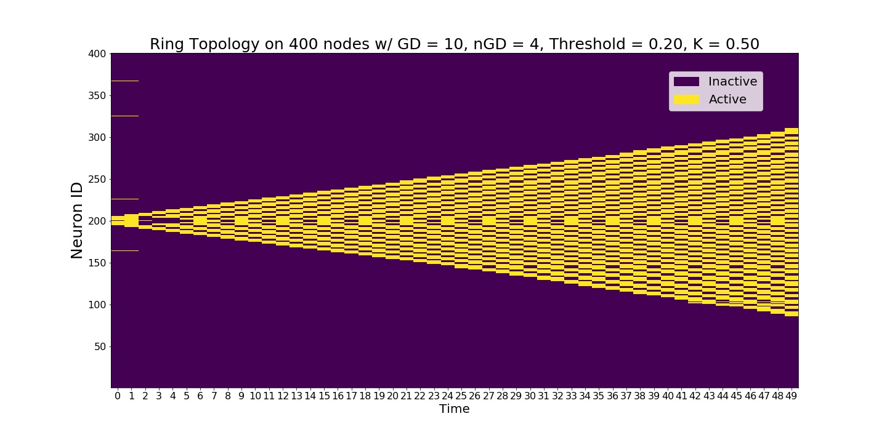
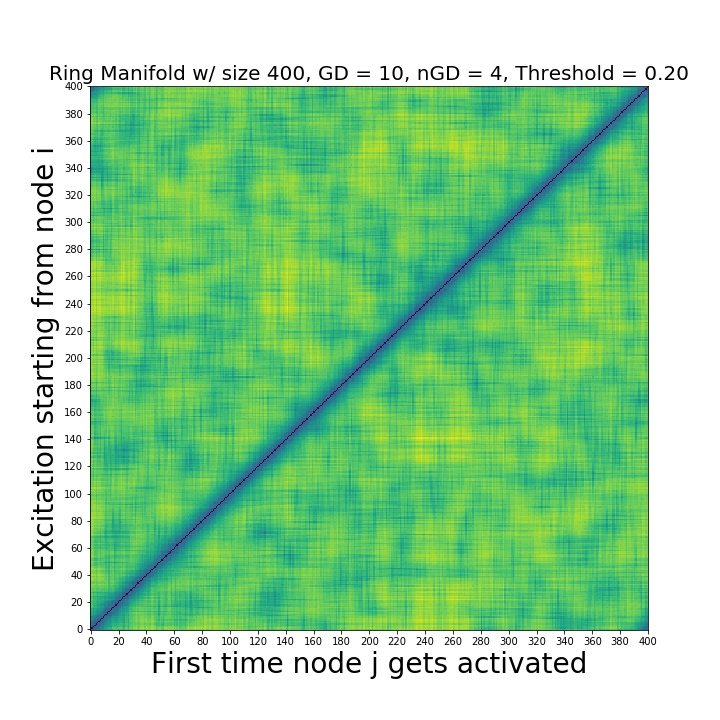

Tutorial¶
Installation/Usage¶
As the package has not been published on PyPi yet, it CANNOT be install using pip. Neuronal Cascades uses cython to exploit the computational efficiency. So, you have to setup.py the *.pyx files in Neuronal_Cascades_base
For now, the suggested method is having the same folder directory in Neuronal_Cascades/Simplicial_Model (setup.py has to be in the parent directory of Neuronal_Cascades_base). Then, add an empty __init__.tex file into Neuronal_Cascades_base (Github doesn’t allow adding empty files). Then go to this directory on your terminal and run python setup.py build_ext --inplace. See https://cython.readthedocs.io/en/latest/src/userguide/source_files_and_compilation.html for details.
Initiate a Geometric_Brain_Network object¶
Create a geometric network on a ring. Band_length corresponds to the number of neighbors to connect from both right and left making the geometric degree 2*band_length

Inheriting neuron objects¶
Define neuronal properies and then use get_neurons to inherit individual neurons into the network.
Running experiments without changing the network conectivity¶
One may want to work with a different set of experiment or neuronal variables without changing the underlying topology. This is when get_neurons function comes handy.

Runnning Simplicial Contagions¶
Simplicial contagions can be ran by simply varying the parameter \(K\) between 0 and 1.
Neurons with memory and refractory period¶
Our model is as general as it can be. So, neurons can have arbitrary number of memory or refractory period given in discrete time steps. This generalization increases conmplexity of the dynamics really quick.
Running stochastic Models¶
Stochasticity of the neuronal responses can be adjusted using the experiment variable \(C\). Higher values make the system deterministic.


{kind=link}
{kind=link}
{kind=link}
Run a full scale experiment¶
If you don’t need to look at the individual contagions starting from different nodes, you can run the contagion starting from node i and calculating the first time it reaches to node j i.e. create a distance matrix who (i,j) entry is the first time the node j activated on a contagion starting from i. Distance matrices enable a global scale TDA analysis.
{kind=link}
Persistence Diagrams¶
Once we created the distance matrices, we can look at the topological features across different contagions and different topologies.